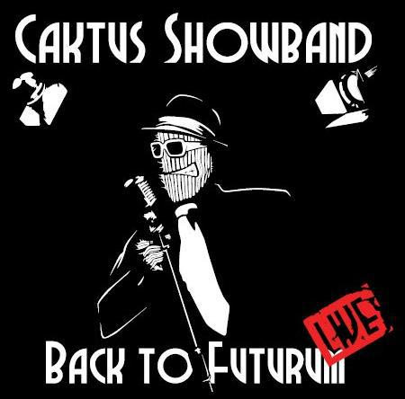
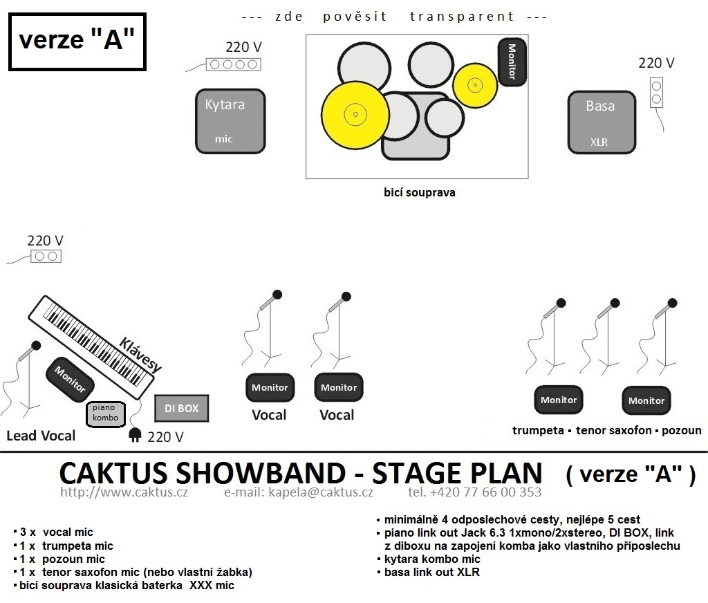

o nás
CAKTUS showband je pražská kapela, jejíž hudba čerpá z kořenů blues, swingu a rock'n'rollu, ale obohacuje se i o řadu dalších žánrů. Hraje vlastní tvorbu i po svém upravené klasické hity. Od roku 2006 vystupuje CAKTUS ve velké sestavě, s dechovou sekcí a sličnými slečnami vokalistkami.
Koncerty showbandu nejsou jen o hudbě, stejný důraz klade na show a komunikaci s publikem. CAKTUS dovede zaujmout jakékoli publikum, rock'n'roll spolehlivě rozhýbe všechny generace. Více jak deset let koncertů, festivalů, plesů, ale i svateb, firemních večírků a oslav všeho druhu nám dalo dost příležitostí na vyladění formule, která funguje.
V dubnu 2011 vydává kapela živé CD
"Back to Futurum" 
CAKTUS od roku 2013 rozšířil repertoár i o tradiční plesové standardy. Pokud máte zájem o kapelu Caktus právě na Vašem večírku či plesu, neváhejte nás kontaktovat v sekci kontaky a postaráme se o to, abychom vyhověli Vašim představám.
________________________________________
technické požadavky:
STAGE PLAN ::: uzamykatelný nebo hlídaný prostor -
šatna :::
::: 2-3 parkovací místa (podle potřeby) :::
